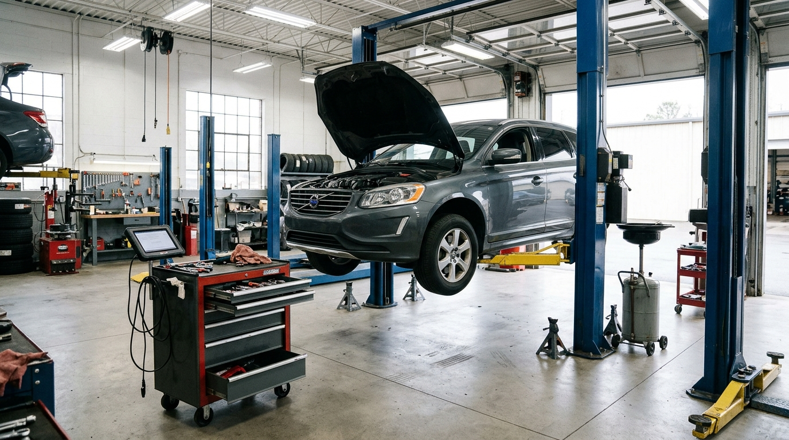
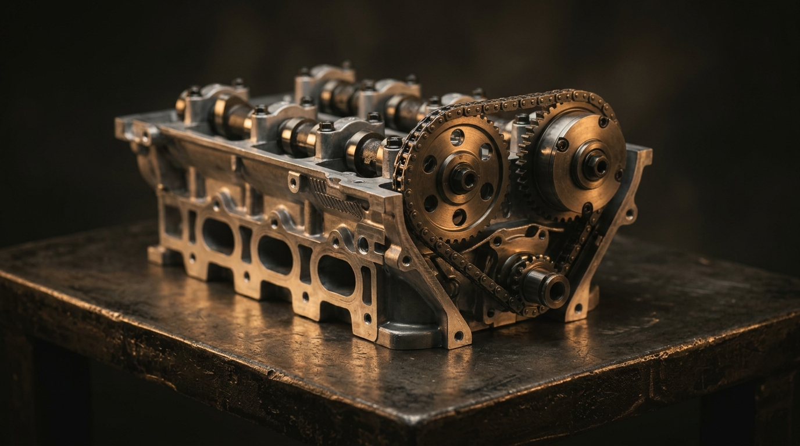

АВТОСЕРВИС В КРАСНОЯРСКЕ · КРАСНОМОСКОВСКАЯ, 76
ПОЧИНИМ ВАШ АВТО БЕЗ ЛИШНИХ РАБОТ
Осмотр на подъёмнике при вас, фиксированная смета до начала ремонта, фотоотчёт в мессенджер и возврат старых деталей. Берём сложную электрику и двигатели.
Что беспокоит в машине?
Выберите симптом: покажем, с чего начнём диагностику на подъёмнике, сколько времени займёт ремонт и какой мастер возьмёт автомобиль.

Услуги и цены
Прокручивайте ленту направлений. Нажмите «Выбрать», чтобы сразу подставить услугу в форму записи.
Мастера и реальные отзывы Zoon 2026
АдресКрасноярск, Красномосковская, 76
РежимПн–Пт 09:00–19:00 · Сб 09:00–15:00 · Вс вых.
ОплатаКарта, QR-код, наличные, перевод, безнал